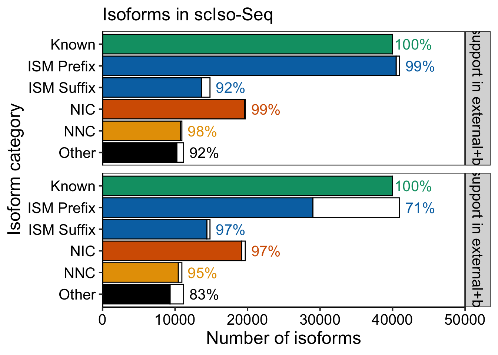
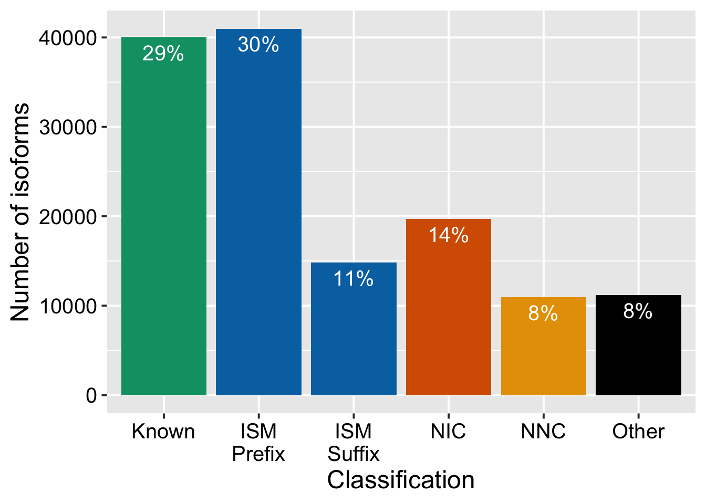
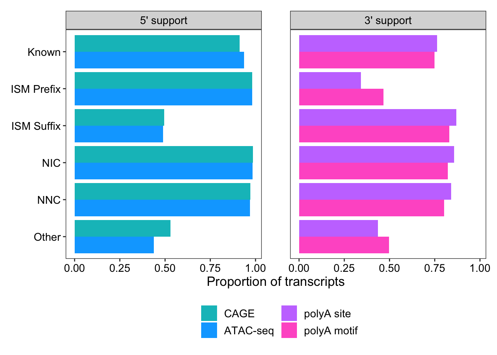
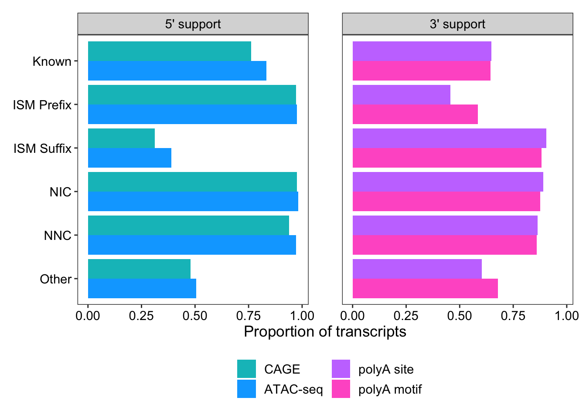

suppressPackageStartupMessages({
library(tidyverse)
library(ggrepel)
library(rtracklayer)
})Fig S9H REVISION1
base_size_pt = 15
theme_set(theme_gray(base_size = base_size_pt))
theme_update(
plot.title = element_text(size = rel(1.4), hjust = 0.5),
axis.title = element_text(size = rel(1.2)),
axis.text = element_text(color="black", size = rel(1)),
legend.title = element_text(size = rel(1.2)),
legend.text = element_text(color="black", size = rel(1))
)
base_size_mm = base_size_pt * 25.4 / 72.27colors = c(
"Known" = "#009E73",
"ISM" = "#0072B2",
"ISM_Prefix" = "#0072B2",
"ISM_Suffix" = "#0072B2",
"ISM_Both" = "#0072B2",
"NIC" = "#D55E00",
"NNC" = "#E69F00",
"Other" = "#000000"
)talon_novelty_to_factor = function(df, split_ISMs = F, split_ISMs_include_both = F, make_other = T) {
df = df %>%
mutate(
ISM_subtype = ISM_subtype %>% na_if("None")
)
levels_to_keep = c("Known", "ISM", "NIC", "NNC")
if (split_ISMs) {
df = df %>%
mutate(
transcript_novelty = if_else(
is.na(ISM_subtype),
transcript_novelty,
str_c(transcript_novelty, ISM_subtype, sep = "_")
)
)
if (split_ISMs_include_both | !make_other) {
levels_to_keep = c("Known", "ISM_Prefix", "ISM_Suffix", "ISM_Both", "NIC", "NNC")
} else {
levels_to_keep = c("Known", "ISM_Prefix", "ISM_Suffix", "NIC", "NNC")
}
}
if (make_other) {
df = df %>%
mutate(
transcript_novelty = transcript_novelty %>%
fct_other(keep = levels_to_keep) %>%
fct_relevel(c(levels_to_keep, "Other"))
)
} else {
df = df %>%
mutate(
transcript_novelty = transcript_novelty %>%
fct_infreq() %>%
fct_relevel(c(levels_to_keep))
)
}
return(df)
}support_data = read_tsv(
"data/Fig_S9H/Isoform_counts_4281_knownCells.tsv.gz",
col_select = c(annot_transcript_id, transcript_novelty, ISM_subtype)
)Rows: 137604 Columns: 3
── Column specification ────────────────────────────────────────────────────────
Delimiter: "\t"
chr (3): annot_transcript_id, transcript_novelty, ISM_subtype
ℹ Use `spec()` to retrieve the full column specification for this data.
ℹ Specify the column types or set `show_col_types = FALSE` to quiet this message.TSS/TES from external
TSS_support_external = read_tsv(
"data/Fig_S9H/sciso_TSS_support_from_external.w_bulk.txt.gz",
col_types = "ciic_cc",
col_names = c("seqname", "start", "end", "transcript_id", "strand", "overlap")
)TES_support_external = read_tsv(
"data/Fig_S9H/sciso_TES_support_from_external.w_bulk.txt.gz",
col_types = "ciic_cc",
col_names = c("seqname", "start", "end", "transcript_id", "strand", "overlap")
)support_data %>% count()# A tibble: 1 × 1
n
<int>
1 137604TSS_support_external %>% distinct() %>% count(overlap)# A tibble: 15 × 2
overlap n
<chr> <int>
1 AdultCTX.collapsed_classification.filtered_lite_hg19.first_exons.pad_… 76685
2 chess3.0.1_hg19.first_exons.pad_100.bed 97850
3 compare.annotated.first_exons.pad_100.bed 85618
4 compare.combined.first_exons.pad_100.bed 131277
5 cp_vz_0.75_min_7_recovery_talon.first_exons.pad_100.bed 125829
6 FetalCTX.collapsed_classification.filtered_lite_hg19.first_exons.pad_… 78751
7 FetalHIP.collapsed_classification.filtered_lite_hg19.first_exons.pad_… 50933
8 FetalSTR.collapsed_classification.filtered_lite_hg19.first_exons.pad_… 53174
9 gencode.v43lift37.annotation.first_exons.pad_100.bed 114472
10 GSE192955_30ClontechTissue_1D_cDNA_N2_R0_updated.first_exons.pad_100.… 115643
11 GSE192955_PC3E_GS689_HEK293T_1D_cDNA_N2_R0_updated.first_exons.pad_10… 110068
12 GSE192955_PC3E_GS689_LRCA_N2_R0_updated.first_exons.pad_100.bed 89929
13 GTX_flair_filter_transcripts_hg19.first_exons.pad_100.bed 85618
14 HumanCTX.collapsed_classification.filtered_lite_hg19.first_exons.pad_… 92727
15 NA12878-DirectRNA-minimap2-2.5_hg19.first_exons.pad_100.bed 105369TES_support_external %>% distinct() %>% count(overlap)# A tibble: 15 × 2
overlap n
<chr> <int>
1 AdultCTX.collapsed_classification.filtered_lite_hg19.last_exons.pad_2… 54937
2 chess3.0.1_hg19.last_exons.pad_200.bed 70899
3 compare.annotated.last_exons.pad_200.bed 58988
4 compare.combined.last_exons.pad_200.bed 115748
5 cp_vz_0.75_min_7_recovery_talon.last_exons.pad_200.bed 103513
6 FetalCTX.collapsed_classification.filtered_lite_hg19.last_exons.pad_2… 55183
7 FetalHIP.collapsed_classification.filtered_lite_hg19.last_exons.pad_2… 38029
8 FetalSTR.collapsed_classification.filtered_lite_hg19.last_exons.pad_2… 39645
9 gencode.v43lift37.annotation.last_exons.pad_200.bed 95161
10 GSE192955_30ClontechTissue_1D_cDNA_N2_R0_updated.last_exons.pad_200.b… 101137
11 GSE192955_PC3E_GS689_HEK293T_1D_cDNA_N2_R0_updated.last_exons.pad_200… 93976
12 GSE192955_PC3E_GS689_LRCA_N2_R0_updated.last_exons.pad_200.bed 73339
13 GTX_flair_filter_transcripts_hg19.last_exons.pad_200.bed 58988
14 HumanCTX.collapsed_classification.filtered_lite_hg19.last_exons.pad_2… 64272
15 NA12878-DirectRNA-minimap2-2.5_hg19.last_exons.pad_200.bed 78035support_data2 = support_data %>%
left_join(
TSS_support_external %>%
distinct() %>% # dups missed by command-line uniq?
mutate(val = T) %>%
pivot_wider(names_from = overlap, values_from = val) %>%
mutate(across(ends_with(".bed"), ~!is.na(.x))) %>%
select(transcript_id, ends_with(".bed")),
by = c("annot_transcript_id" = "transcript_id")
) %>%
left_join(
TES_support_external %>%
distinct() %>% # dups missed by command-line uniq?
mutate(val = T) %>%
pivot_wider(names_from = overlap, values_from = val) %>%
mutate(across(ends_with(".bed"), ~!is.na(.x))) %>%
select(transcript_id, ends_with(".bed")),
by = c("annot_transcript_id" = "transcript_id")
) %>%
mutate(across(ends_with(".bed"), ~!is.na(.x)))write_tsv(support_data2, "output/figures/revision1/scIso_TSS_TES_external_support.w_bulk.tsv")# Compute percentages
freqs = bind_rows(
support_data2 %>%
talon_novelty_to_factor(split_ISMs = T) %>%
mutate(support = if_any(contains("first_exons"))) %>%
dplyr::count(support, transcript_novelty) %>%
group_by(transcript_novelty) %>%
mutate(freq = n / sum(n), total = sum(n)) %>%
mutate(percent = round(freq*100)) %>%
mutate(percent = if_else(support, percent, NA_real_)) %>%
mutate(tcolor_grp = factor(if_else(percent > 20, "white", "black"))) %>%
mutate(support_type = "5' support in external+bulk"),
support_data2 %>%
talon_novelty_to_factor(split_ISMs = T) %>%
mutate(support = if_any(contains("last_exons"))) %>%
dplyr::count(support, transcript_novelty) %>%
group_by(transcript_novelty) %>%
mutate(freq = n / sum(n), total = sum(n)) %>%
mutate(percent = round(freq*100)) %>%
mutate(percent = if_else(support, percent, NA_real_)) %>%
mutate(tcolor_grp = factor(if_else(percent > 20, "white", "black"))) %>%
mutate(support_type = "3' support in external+bulk")
) %>% mutate(support_type = as_factor(support_type))
xlabel = "Isoform category"
ylabel = "Number of isoforms"
title = "Isoforms in scIso-Seq"
ylabels = waiver()
ymax = 50000
label_pad = max(freqs$total)*.07
ggplot(freqs, aes(x = transcript_novelty %>% fct_rev(), y = n, fill = transcript_novelty,
alpha = support)) +
geom_bar(stat="identity", color = "black") +
xlab(xlabel) + ylab(ylabel) + ggtitle(title) +
scale_fill_manual("", values = colors) +
scale_alpha_manual(values=c(0,1), name = "CAGE support") +
coord_flip(ylim=c(0,ymax)) + guides(fill="none", alpha = "none") +
geom_text(aes(y = total + label_pad,
label = paste0(percent, "%"), color = transcript_novelty),
position = position_dodge(0), size = base_size_mm) +
scale_color_manual(values = colors) +
guides(colour="none", fill="none") +
scale_x_discrete(labels = c("ISM_Prefix" = "ISM Prefix", "ISM_Suffix" = "ISM Suffix")) +
scale_y_continuous(labels = ylabels, expand = c(0, 0)) +
facet_grid(rows = vars(support_type)) +
theme_bw(base_size = base_size_pt) +
theme(axis.line.x = element_line(color="black", size = 0.5),
axis.line.y = element_line(color="black", size = 0.5),
axis.text.x = element_text(color="black", size = base_size_pt),
axis.text.y = element_text(color="black", size = base_size_pt),
axis.title.x = element_text(color="black", size = base_size_pt*1.2),
axis.title.y = element_text(color="black", size = base_size_pt*1.2),
strip.text = element_text(color="black", size = base_size_pt)) +
theme(panel.grid.major = element_blank(),
panel.grid.minor = element_blank())Warning: The `size` argument of `element_line()` is deprecated as of ggplot2 3.4.0.
ℹ Please use the `linewidth` argument instead.
ggsave("output/figures/revision1/FigS9H_for_revision_w_bulk_split.pdf", width = 7.5, height = 6.5)Remake S9G split
iso_types = support_data %>%
talon_novelty_to_factor(split_ISMs = T) %>%
count(transcript_novelty) %>%
mutate(prop = n / sum(n))
ggplot(iso_types, aes(x = transcript_novelty, y = n, fill = transcript_novelty)) +
geom_col() +
geom_text(
aes(label = scales::percent(prop, accuracy = 1)),
vjust = 1.5,
colour = "white",
size = base_size_mm
) +
scale_fill_manual(
values = colors
) +
scale_x_discrete(
labels = c("ISM_Prefix" = "ISM\nPrefix", "ISM_Suffix" = "ISM\nSuffix")
) +
guides(fill = "none") +
xlab("Classification") +
#ylab(expression(paste("Number of transcripts (x", 10^3, ")")))
ylab("Number of isoforms")
ggsave("output/figures/revision1/FigS9G_for_revision_split.pdf", width = 6, height = 5)sqanti/fig 1b on just single cell
cts = read_table("data/Fig_S9H/scIsoseq_4kcells_final_talon_abundance_filtered.tsv.gz")
── Column specification ────────────────────────────────────────────────────────
cols(
.default = col_double(),
annot_gene_id = col_character(),
annot_transcript_id = col_character(),
annot_gene_name = col_character(),
annot_transcript_name = col_character(),
gene_novelty = col_character(),
transcript_novelty = col_character(),
ISM_subtype = col_character()
)
ℹ Use `spec()` for the full column specifications.sqanti = read_tsv("data/Fig_S9H/scIsoseq_4kcells_final.talon.SQANTI3/scIsoseq_4kcells_final.talon_classification.txt.gz")Rows: 87162 Columns: 48── Column specification ────────────────────────────────────────────────────────
Delimiter: "\t"
chr (14): isoform, chrom, strand, structural_category, associated_gene, asso...
dbl (21): length, exons, ref_length, ref_exons, diff_to_TSS, diff_to_TTS, di...
lgl (13): RTS_stage, FL, n_indels, n_indels_junc, bite, iso_exp, gene_exp, r...
ℹ Use `spec()` to retrieve the full column specification for this data.
ℹ Specify the column types or set `show_col_types = FALSE` to quiet this message.theme_set(theme_bw())
theme_update(
plot.title = element_text(size = rel(1.4), hjust = 0.5),
axis.title = element_text(size = rel(1.2)),
axis.text = element_text(color="black", size = rel(1)),
legend.title = element_text(size = rel(1.2)),
legend.text = element_text(color="black", size = rel(1)),
strip.text = element_text(color="black", size = rel(1))
)support_for_plot = cts %>% select(transcript_id = annot_transcript_id, transcript_novelty, ISM_subtype) %>%
left_join(
read_csv("data/Fig_S9H/sc_refTSS_200_CAGE_results.csv") %>%
mutate(CAGE_support = CAGE_support == "yes") %>%
dplyr::rename(within_CAGE_refTSS = "CAGE_support"),
by = c("transcript_id" = "transcript_ID")
) %>%
left_join(
read_csv("data/Fig_S9H/sc_fetal_200_CAGE_results.csv") %>%
mutate(CAGE_support = CAGE_support == "yes") %>%
dplyr::rename(within_CAGE_fetal = "CAGE_support"),
by = c("transcript_id" = "transcript_ID")
) %>%
left_join(
read_csv("data/Fig_S9H/sc_Greenleaf_500_ATAC_results.csv") %>%
mutate(CAGE_support = CAGE_support == "yes") %>%
dplyr::rename(within_ATAC_Greenleaf = "CAGE_support"),
by = c("transcript_id" = "transcript_ID")
) %>%
left_join(
read_csv("data/Fig_S9H/sc_Nowakowski_500_ATAC_results.csv") %>%
mutate(CAGE_support = CAGE_support == "yes") %>%
dplyr::rename(within_ATAC_Nowakowski = "CAGE_support"),
by = c("transcript_id" = "transcript_ID")
) %>%
left_join(
read_csv("data/Fig_S9H/sc_LuisCP_500_ATAC_results.csv") %>%
mutate(CAGE_support = CAGE_support == "yes") %>%
dplyr::rename(within_ATAC_LuisCP = "CAGE_support"),
by = c("transcript_id" = "transcript_ID")
) %>%
left_join(
read_csv("data/Fig_S9H/sc_LuisVZ_500_ATAC_results.csv") %>%
mutate(CAGE_support = CAGE_support == "yes") %>%
dplyr::rename(within_ATAC_LuisGZ = "CAGE_support"),
by = c("transcript_id" = "transcript_ID")
) %>%
left_join(
sqanti %>% select(isoform, within_polyA_site, polyA_motif_found),
by = c("transcript_id" = "isoform")
) %>%
mutate(across(!c("transcript_id", "transcript_novelty", "ISM_subtype"), replace_na, FALSE))Rows: 87162 Columns: 2
── Column specification ────────────────────────────────────────────────────────
Delimiter: ","
chr (2): transcript_ID, CAGE_support
ℹ Use `spec()` to retrieve the full column specification for this data.
ℹ Specify the column types or set `show_col_types = FALSE` to quiet this message.
Rows: 87162 Columns: 2
── Column specification ────────────────────────────────────────────────────────
Delimiter: ","
chr (2): transcript_ID, CAGE_support
ℹ Use `spec()` to retrieve the full column specification for this data.
ℹ Specify the column types or set `show_col_types = FALSE` to quiet this message.
Rows: 87162 Columns: 2
── Column specification ────────────────────────────────────────────────────────
Delimiter: ","
chr (2): transcript_ID, CAGE_support
ℹ Use `spec()` to retrieve the full column specification for this data.
ℹ Specify the column types or set `show_col_types = FALSE` to quiet this message.
Rows: 87162 Columns: 2
── Column specification ────────────────────────────────────────────────────────
Delimiter: ","
chr (2): transcript_ID, CAGE_support
ℹ Use `spec()` to retrieve the full column specification for this data.
ℹ Specify the column types or set `show_col_types = FALSE` to quiet this message.
Rows: 87162 Columns: 2
── Column specification ────────────────────────────────────────────────────────
Delimiter: ","
chr (2): transcript_ID, CAGE_support
ℹ Use `spec()` to retrieve the full column specification for this data.
ℹ Specify the column types or set `show_col_types = FALSE` to quiet this message.
Rows: 87162 Columns: 2
── Column specification ────────────────────────────────────────────────────────
Delimiter: ","
chr (2): transcript_ID, CAGE_support
ℹ Use `spec()` to retrieve the full column specification for this data.
ℹ Specify the column types or set `show_col_types = FALSE` to quiet this message.support_for_plot# A tibble: 87,162 × 11
transcript_id trans…¹ ISM_s…² withi…³ withi…⁴ withi…⁵ withi…⁶ withi…⁷ withi…⁸
<chr> <chr> <chr> <lgl> <lgl> <lgl> <lgl> <lgl> <lgl>
1 ENST00000416… Known None TRUE TRUE FALSE TRUE FALSE FALSE
2 ENST00000457… Known None TRUE TRUE TRUE TRUE FALSE FALSE
3 ENST00000414… Known None TRUE FALSE FALSE FALSE FALSE FALSE
4 ENST00000473… Known None TRUE TRUE TRUE TRUE FALSE FALSE
5 ENST00000327… Known None TRUE TRUE TRUE TRUE FALSE FALSE
6 ENST00000469… Known None TRUE TRUE TRUE TRUE FALSE FALSE
7 ENST00000338… Known None TRUE TRUE TRUE TRUE FALSE FALSE
8 ENST00000428… Known None TRUE TRUE TRUE TRUE FALSE FALSE
9 ENST00000304… Known None TRUE TRUE TRUE TRUE FALSE FALSE
10 ENST00000481… Known None TRUE TRUE TRUE TRUE FALSE FALSE
# … with 87,152 more rows, 2 more variables: within_polyA_site <lgl>,
# polyA_motif_found <lgl>, and abbreviated variable names
# ¹transcript_novelty, ²ISM_subtype, ³within_CAGE_refTSS, ⁴within_CAGE_fetal,
# ⁵within_ATAC_Greenleaf, ⁶within_ATAC_Nowakowski, ⁷within_ATAC_LuisCP,
# ⁸within_ATAC_LuisGZsupport_for_plot2 = support_for_plot %>%
talon_novelty_to_factor(split_ISMs = T) %>%
group_by(transcript_novelty) %>%
summarize(
# any_5p = sum(within_CAGE_refTSS | within_CAGE_fetal | within_ATAC_Greenleaf | within_ATAC_Nowakowski, na.rm = T),
within_CAGE_peak = sum(within_CAGE_refTSS | within_CAGE_fetal, na.rm = T),
within_ATAC_peak = sum(within_ATAC_Greenleaf | within_ATAC_Nowakowski | within_ATAC_LuisCP | within_ATAC_LuisGZ, na.rm = T),
# any_3p = sum(within_polyA_site | polyA_motif_found, na.rm = T),
within_polyA_site = sum(within_polyA_site, na.rm = T),
polyA_motif_found = sum(polyA_motif_found, na.rm = T),
n = n()
) %>%
pivot_longer(!c("transcript_novelty", "n")) %>%
mutate(prop = value / n) %>%
mutate(end = if_else(name %in% c("within_polyA_site", "polyA_motif_found", "any_3p"), "3' support", "5' support")) %>%
mutate(end = end %>% factor(levels = c("5' support", "3' support"))) %>%
mutate(name = name %>% as_factor())
support_for_plot2# A tibble: 24 × 6
transcript_novelty n name value prop end
<fct> <int> <fct> <int> <dbl> <fct>
1 Known 23503 within_CAGE_peak 21451 0.913 5' support
2 Known 23503 within_ATAC_peak 22024 0.937 5' support
3 Known 23503 within_polyA_site 17940 0.763 3' support
4 Known 23503 polyA_motif_found 17581 0.748 3' support
5 ISM_Prefix 30273 within_CAGE_peak 29743 0.982 5' support
6 ISM_Prefix 30273 within_ATAC_peak 29733 0.982 5' support
7 ISM_Prefix 30273 within_polyA_site 10334 0.341 3' support
8 ISM_Prefix 30273 polyA_motif_found 14149 0.467 3' support
9 ISM_Suffix 8942 within_CAGE_peak 4432 0.496 5' support
10 ISM_Suffix 8942 within_ATAC_peak 4365 0.488 5' support
# … with 14 more rowsggplot(support_for_plot2, aes(x = prop, y = transcript_novelty, fill = fct_rev(name))) +
geom_col(position = "dodge") +
scale_y_discrete(
limits = rev,
labels = c("ISM_Prefix" = "ISM Prefix", "ISM_Suffix" = "ISM Suffix")
) +
scale_fill_manual(
limits = c("within_CAGE_peak", "within_ATAC_peak", "within_polyA_site", "polyA_motif_found"),
labels = c("CAGE", "ATAC-seq", "polyA site", "polyA motif"),
values = c("#00bfc4", "#00a9ff", "#c77cff", "#ff61cc")
) +
labs(
x = "Proportion of transcripts",
y = NULL,
fill = NULL
) +
guides(
fill = guide_legend(ncol = 2)
) +
theme(
panel.grid.major = element_blank(),
panel.grid.minor = element_blank(),
legend.position = "bottom",
panel.spacing = unit(2, "lines"),
plot.margin = margin(11, 11, 11, 11, "points")
) +
facet_wrap(vars(end))
ggsave("output/figures/revision1/Fig2B_single_cell_ver_split.pdf", width = 8, height = 6)remake plot for CP/GZ but this time split ISMs
cts = read_table("data/cp_vz_0.75_min_7_recovery_talon_abundance_filtered.tsv.gz")
── Column specification ────────────────────────────────────────────────────────
cols(
.default = col_double(),
annot_gene_id = col_character(),
annot_transcript_id = col_character(),
annot_gene_name = col_character(),
annot_transcript_name = col_character(),
gene_novelty = col_character(),
transcript_novelty = col_character(),
ISM_subtype = col_character()
)
ℹ Use `spec()` for the full column specifications.sqanti = read_tsv("data/sqanti/cp_vz_0.75_min_7_recovery_talon_classification.txt.gz")Rows: 214516 Columns: 48── Column specification ────────────────────────────────────────────────────────
Delimiter: "\t"
chr (14): isoform, chrom, strand, structural_category, associated_gene, asso...
dbl (21): length, exons, ref_length, ref_exons, diff_to_TSS, diff_to_TTS, di...
lgl (13): RTS_stage, FL, n_indels, n_indels_junc, bite, iso_exp, gene_exp, r...
ℹ Use `spec()` to retrieve the full column specification for this data.
ℹ Specify the column types or set `show_col_types = FALSE` to quiet this message.support_for_plot = cts %>% select(transcript_id = annot_transcript_id, transcript_novelty, ISM_subtype) %>%
left_join(
read_csv("data/within_CAGE/cpvz_refTSS_200_CAGE_results.csv") %>%
mutate(CAGE_support = CAGE_support == "yes") %>%
dplyr::rename(within_CAGE_refTSS = "CAGE_support"),
by = c("transcript_id" = "transcript_ID")
) %>%
left_join(
read_csv("data/within_CAGE/cpvz_fetal_200_CAGE_results.csv") %>%
mutate(CAGE_support = CAGE_support == "yes") %>%
dplyr::rename(within_CAGE_fetal = "CAGE_support"),
by = c("transcript_id" = "transcript_ID")
) %>%
left_join(
read_csv("data/within_ATAC/cpvz_Greenleaf_500_ATAC_results.csv") %>%
mutate(CAGE_support = CAGE_support == "yes") %>%
dplyr::rename(within_ATAC_Greenleaf = "CAGE_support"),
by = c("transcript_id" = "transcript_ID")
) %>%
left_join(
read_csv("data/within_ATAC/cpvz_Nowakowski_500_ATAC_results.csv") %>%
mutate(CAGE_support = CAGE_support == "yes") %>%
dplyr::rename(within_ATAC_Nowakowski = "CAGE_support"),
by = c("transcript_id" = "transcript_ID")
) %>%
left_join(
read_csv("data/within_ATAC/cpvz_LuisCP_500_ATAC_results.csv") %>%
mutate(CAGE_support = CAGE_support == "yes") %>%
dplyr::rename(within_ATAC_LuisCP = "CAGE_support"),
by = c("transcript_id" = "transcript_ID")
) %>%
left_join(
read_csv("data/within_ATAC/cpvz_LuisVZ_500_ATAC_results.csv") %>%
mutate(CAGE_support = CAGE_support == "yes") %>%
dplyr::rename(within_ATAC_LuisGZ = "CAGE_support"),
by = c("transcript_id" = "transcript_ID")
) %>%
left_join(
sqanti %>% select(isoform, within_polyA_site, polyA_motif_found),
by = c("transcript_id" = "isoform")
) %>%
mutate(across(!c("transcript_id", "transcript_novelty", "ISM_subtype"), replace_na, FALSE))Rows: 214516 Columns: 2
── Column specification ────────────────────────────────────────────────────────
Delimiter: ","
chr (2): transcript_ID, CAGE_support
ℹ Use `spec()` to retrieve the full column specification for this data.
ℹ Specify the column types or set `show_col_types = FALSE` to quiet this message.
Rows: 214516 Columns: 2
── Column specification ────────────────────────────────────────────────────────
Delimiter: ","
chr (2): transcript_ID, CAGE_support
ℹ Use `spec()` to retrieve the full column specification for this data.
ℹ Specify the column types or set `show_col_types = FALSE` to quiet this message.
Rows: 214516 Columns: 2
── Column specification ────────────────────────────────────────────────────────
Delimiter: ","
chr (2): transcript_ID, CAGE_support
ℹ Use `spec()` to retrieve the full column specification for this data.
ℹ Specify the column types or set `show_col_types = FALSE` to quiet this message.
Rows: 214516 Columns: 2
── Column specification ────────────────────────────────────────────────────────
Delimiter: ","
chr (2): transcript_ID, CAGE_support
ℹ Use `spec()` to retrieve the full column specification for this data.
ℹ Specify the column types or set `show_col_types = FALSE` to quiet this message.
Rows: 214516 Columns: 2
── Column specification ────────────────────────────────────────────────────────
Delimiter: ","
chr (2): transcript_ID, CAGE_support
ℹ Use `spec()` to retrieve the full column specification for this data.
ℹ Specify the column types or set `show_col_types = FALSE` to quiet this message.
Rows: 214516 Columns: 2
── Column specification ────────────────────────────────────────────────────────
Delimiter: ","
chr (2): transcript_ID, CAGE_support
ℹ Use `spec()` to retrieve the full column specification for this data.
ℹ Specify the column types or set `show_col_types = FALSE` to quiet this message.support_for_plot# A tibble: 214,516 × 11
transcript_id trans…¹ ISM_s…² withi…³ withi…⁴ withi…⁵ withi…⁶ withi…⁷ withi…⁸
<chr> <chr> <chr> <lgl> <lgl> <lgl> <lgl> <lgl> <lgl>
1 ENST00000494… Known None FALSE FALSE FALSE FALSE FALSE FALSE
2 ENST00000424… Known None FALSE FALSE FALSE FALSE FALSE FALSE
3 ENST00000445… Known None FALSE FALSE FALSE FALSE FALSE FALSE
4 ENST00000457… Known None TRUE TRUE TRUE TRUE FALSE FALSE
5 ENST00000414… Known None TRUE FALSE FALSE FALSE FALSE FALSE
6 ENST00000655… Known None FALSE TRUE TRUE TRUE FALSE FALSE
7 ENST00000457… Known None FALSE TRUE TRUE TRUE FALSE FALSE
8 ENST00000591… Known None FALSE FALSE FALSE FALSE FALSE FALSE
9 ENST00000644… Known None FALSE FALSE FALSE FALSE FALSE FALSE
10 ENST00000445… Known None TRUE TRUE TRUE TRUE FALSE FALSE
# … with 214,506 more rows, 2 more variables: within_polyA_site <lgl>,
# polyA_motif_found <lgl>, and abbreviated variable names
# ¹transcript_novelty, ²ISM_subtype, ³within_CAGE_refTSS, ⁴within_CAGE_fetal,
# ⁵within_ATAC_Greenleaf, ⁶within_ATAC_Nowakowski, ⁷within_ATAC_LuisCP,
# ⁸within_ATAC_LuisGZsupport_for_plot2 = support_for_plot %>%
talon_novelty_to_factor(split_ISMs = T) %>%
group_by(transcript_novelty) %>%
summarize(
# any_5p = sum(within_CAGE_refTSS | within_CAGE_fetal | within_ATAC_Greenleaf | within_ATAC_Nowakowski, na.rm = T),
within_CAGE_peak = sum(within_CAGE_refTSS | within_CAGE_fetal, na.rm = T),
within_ATAC_peak = sum(within_ATAC_Greenleaf | within_ATAC_Nowakowski | within_ATAC_LuisCP | within_ATAC_LuisGZ, na.rm = T),
# any_3p = sum(within_polyA_site | polyA_motif_found, na.rm = T),
within_polyA_site = sum(within_polyA_site, na.rm = T),
polyA_motif_found = sum(polyA_motif_found, na.rm = T),
n = n()
) %>%
pivot_longer(!c("transcript_novelty", "n")) %>%
mutate(prop = value / n) %>%
mutate(end = if_else(name %in% c("within_polyA_site", "polyA_motif_found", "any_3p"), "3' support", "5' support")) %>%
mutate(end = end %>% factor(levels = c("5' support", "3' support"))) %>%
mutate(name = name %>% as_factor())
support_for_plot2# A tibble: 24 × 6
transcript_novelty n name value prop end
<fct> <int> <fct> <int> <dbl> <fct>
1 Known 65006 within_CAGE_peak 49495 0.761 5' support
2 Known 65006 within_ATAC_peak 54138 0.833 5' support
3 Known 65006 within_polyA_site 42187 0.649 3' support
4 Known 65006 polyA_motif_found 41856 0.644 3' support
5 ISM_Prefix 22053 within_CAGE_peak 21440 0.972 5' support
6 ISM_Prefix 22053 within_ATAC_peak 21520 0.976 5' support
7 ISM_Prefix 22053 within_polyA_site 10085 0.457 3' support
8 ISM_Prefix 22053 polyA_motif_found 12899 0.585 3' support
9 ISM_Suffix 55606 within_CAGE_peak 17334 0.312 5' support
10 ISM_Suffix 55606 within_ATAC_peak 21612 0.389 5' support
# … with 14 more rowsggplot(support_for_plot2, aes(x = prop, y = transcript_novelty, fill = fct_rev(name))) +
geom_col(position = "dodge") +
scale_y_discrete(
limits = rev,
labels = c("ISM_Prefix" = "ISM Prefix", "ISM_Suffix" = "ISM Suffix")
) +
scale_fill_manual(
limits = c("within_CAGE_peak", "within_ATAC_peak", "within_polyA_site", "polyA_motif_found"),
labels = c("CAGE", "ATAC-seq", "polyA site", "polyA motif"),
values = c("#00bfc4", "#00a9ff", "#c77cff", "#ff61cc")
) +
labs(
x = "Proportion of transcripts",
y = NULL,
fill = NULL
) +
guides(
fill = guide_legend(ncol = 2)
) +
theme(
panel.grid.major = element_blank(),
panel.grid.minor = element_blank(),
legend.position = "bottom",
panel.spacing = unit(2, "lines"),
plot.margin = margin(11, 11, 11, 11, "points")
) +
facet_wrap(vars(end))
ggsave("output/figures/revision1/Fig2B_split.pdf", width = 4.5, height = 3.25)